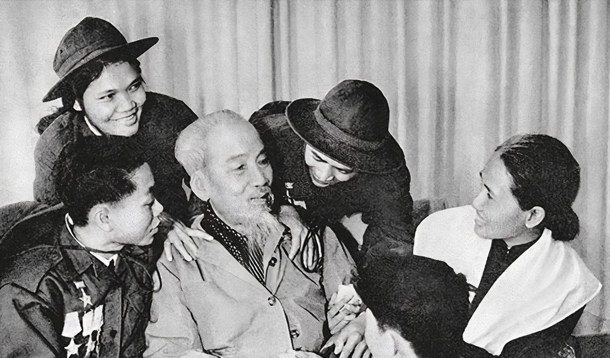

NÂNG NIU TẤT CẢ CHỈ QUÊN MÌNH
Chủ tịch Hồ Chí Minh
NÂNG NIU TẤT CẢ CHỈ QUÊN MÌNH
Đến tháng 8 năm 1969 thì bệnh tình của Bác ngày một nặng thêm. Khi phát hiện triệu chứng tim tưới máu não không đều, các bác sĩ đề nghị Bác không lên xuống cầu thang và ở nhà sàn nữa. Vậy là có dấu hiệu nghiêm trọng về tình hình sức khoẻ của người; tuy thế Bác vẫn chưa ngừng làm việc. Mặc dù đang phải trải qua những cơn đau dữ dội, nhưng hai tay Bác vẫn để trên bụng, bình thản đến kỳ lạ.
Năm ấy, nước các triền sông dâng to, Bác nằm đó mà vẫn như lắng nghe nước các dòng sông xa gần chảy xiết. Nếu không vì ốm đau thì Bác đã đến tận nơi xung yếu như những mùa trước đó. Sợ con lũ có đột biến bất thường, Trung ương mời Bác lên An toàn khu, nhưng Bác bảo: “Bác không thể xa dân”. Và Bác chỉ yên lòng khi Thủ tướng Phạm Văn Đồng báo cáo việc phân lũ cứu dân đã được tiến hành khẩn trương, chu đáo. Mỗi lần tỉnh dậy, câu đầu tiên Bác hỏi: – Mực nước sông Hồng đã rút chưa?
Hàng ngày Người vẫn nghe các đồng chí trong Bộ Chính trị đến báo cáo công việc ở hậu phương và tiền tuyến, Bác vẫn đọc sách báo, bản tin và ghi lại bút tích ở những bài Bác quan tâm. Bác bảo đồng chí phục vụ: đánh dấu nét chì đỏ ở bài: “Nam Bắc là một nhà, là anh em ruột thịt, quyết không thể chia cắt được” đăng trên báo Thống nhất, và khoanh tròn chữ “Ních – xơn hoãn rút quân”…
Trong cuốn sổ tay, Đại tướng Võ Nguyên Giáp có ghi rõ từ ngày 24/8 trở đi, Bác mệt nặng. Mặc dù ốm mệt, Bác vẫn rất quan tâm tình hình đất nước. Khi tỉnh lại, Bác hỏi: “Hôm nay miền Nam đánh thắng đâu?” và Đại tướng đã trả lời: “Xin Bác yên tâm chữa bệnh cho khoẻ…để rồi được báo cáo tỉ mỉ với Bác về chiến sự ở miền Nam”.
Ngày 26/8, sức khoẻ của Người diễn biến phức tạp, Hội đồng giáo sư, bác sĩ và các y tá của Viện Quân y 108 thường xuyên túc trực bên người để chăm sóc, theo dõi diễn biến sức khoẻ. Khi tỉnh dậy, Người nói muốn được nghe một khúc dân ca. Cô y tá Ngô Thị Oanh có mặt lúc đó đã hát “Bài ca người chiến sĩ quân y” theo làn điệu dân ca, mà sau này nhạc sĩ Trần Hoàn đã viết: “Người muốn đem đến tận vô cùng bài ca đất nước theo Bác đến mênh mông”.
Ngày 29/8, buổi chiều, Thủ tướng Phạm Văn Đồng đến thăm Người. Vừa tỉnh lại, Người hỏi: “Các chú chuẩn bị lễ kỷ niệm Quốc khánh đến đâu rồi?”. Nghe Thủ tướng báo cáo, Người dặn: “Các chú nhớ phải bắn pháo hoa mừng chiến thắng để động viên tinh thần chiến đấu của nhân dân”. Dù cuộc sống chỉ còn trong gang tấc, Bác vẫn muốn ra dự lễ, gặp đồng bào 5 – 10 phút để đồng bào đỡ lo. Bác đã trao đổi với đồng chí Lê Văn Lương và đồng chí Vũ Kỳ rất cụ thể: “Bác sẽ buộc khăn che cổ, Bác ra ngồi sẵn trong đoàn Chủ tịch rồi mới kéo màn che của hội trường và bắt đầu cuộc mít tinh. Bác sẽ nói thế nào để đồng bào không biết là Bác đau” (nhưng rồi Quốc khánh năm đó, trên lễ đài vắng Bác).
Vẫn như thường lệ, vào ngày đầu tháng, giờ đầu, Bác dành thời gian để nghe Ban Tuyên huấn báo cáo về gương “Người tốt, việc tốt”. Hôm 31/8, sau khi dứt cơn mê, Bác gọi đồng chí phục vụ, nói: – Mai là ngày đầu tháng, chú nhớ nhắc chú Hà Huy Giáp đến báo cáo cho Bác nghe gương “Người tốt, việc tốt”.
Bác gửi thưởng huy hiệu của Người cho 7 thiếu niên dũng cảm, thật thà, nhặt được của rơi đem trả lại người đánh mất, dũng cảm lao xuống sông cứu người bị nạn. Bác gửi lẵng hoa tặng các chiến sĩ tên lửa Sư đoàn 361 khi được nghe báo cáo các chiến sĩ đã bắn rơi một máy bay không người lái của Mỹ. Ngày 01/9 năm đó, kỷ niệm 24 năm Cách mạng Tháng Tám và Quốc khánh 2/9, Bác gửi vòng hoa tới viếng các liệt sĩ Hà Nội.
Trong những ngày đó, Bộ Chính trị Trung ương Đảng quyết định điều động thêm một số cán bộ, nhân viên y tế giỏi của các bệnh viện lớn cùng một số thiết bị hiện đại đến cứu chữa cho Bác.
Tỉnh dậy, thấy có mấy nữ y tá ở cạnh, Bác hỏi đồng chí phục vụ: Những ai thế chú?
– Thưa Bác, đó là các đồng chí nữ y tá của bệnh viện 108 quân đội được điều động đến để phục vụ Bác.
Lần trước, Bộ Chính trị cũng điều động đến một bác sĩ. Khi xin ý kiến, Bác nói:
– Các chú biết đấy, người già thường khó tính, mà người già có bệnh tật lại càng khó tính hơn. Các chú hỏi xem đồng chí ấy có đồng ý vào đây không?
Lần này, các cô y tá vào lúc Bác mệt nặng. Nghe đồng chí phục vụ nói xong, Bác chậm rãi:
– Các cháu còn trẻ, đang tuổi ăn ngủ. Bác biết các cháu rất thương Bác, nhưng không nên để các cháu ở đây, các cháu gái là dễ xúc động lắm.
Thoáng nhìn thấy những bông hồng cắm trong lọ để trên tủ nhỏ ở đầu giường, Bác hỏi đồng chí phục vụ:
– Hoa trong vườn phải không? Nếu còn, chú hái vào tặng các cháu gái.
Khi đồng chí phục vụ ra vườn hái hoa cầm vào, Bác liền bảo: Bác đang mệt, chú thay mặt Bác tặng mỗi cháu một bông hồng.
Các nữ y tá chiến sĩ được vào phục vụ Bác Hồ đã là một vinh dự rồi. Vinh dự lớn hơn là các cô lại được Bác tặng hoa lấy trong vườn Phủ Chủ tịch. Tất cả các cô đều nhòa nước mắt, lặng yên, bởi trong lúc đang chống chọi với những cơn đau, Bác Hồ không nghĩ về mình mà còn lo cho cả miền Nam, cho hạnh phúc của nhân dân và cho niềm vui của mọi người.
Những người được chứng kiến những giây phút Bác trở bệnh đã không cầm được nước mắt khi nghe người nói: “Quê mình ở Nam đàn, Nghệ An nhưng mẹ mình mất ở xứ Huế, cha mình mất ở Cao Lãnh. Quê mình trải dài đất nước. ở những nơi như Huế, Phan Thiết, Sài Gòn… trước lúc đi ra nước ngoài, mình dã từng sống và đã đi đến nơi, nhưng chưa về đến chốn”. Cái chốn mà cả cha và mẹ Người đều trút hơi thở cuối cùng. Người đề nghị cho người uống chút nước dừa. Như hiểu được lòng của Bác, những người phục vụ đã ra hai cây dừa trước nhà sàn, đó là hai cây dừa giống miền Nam, hàng ngày Bác vẫn chăm sóc, lấy ở mỗi cây một trái, bổ ra lấy nước mời Bác uống. Bác đã nhấp một chút nước dừa để coi như được mang theo mình vào cõi trường sinh sự “Nhớ miền Nam nỗi nhớ nhà”.
Ngày 02/9/1969, bệnh của Người diễn biến rất xấu và mỗi lúc một trầm trọng. 9 giờ 47 phút, Người qua đời sau một cơn đau tim đột ngột rất nặng và đến lúc này, Người mới thật sự ngừng cống hiến sức lực, trí tuệ, cuộc đời mình cho Đảng, cho dân, cho nhân loại.

Trong Di chúc Người để lại cho toàn Đảng, toàn dân còn ghi: “Suốt đời tôi phục vụ Tổ quốc, phục vụ cách mạng, phục vụ nhân dân”. Nay dù phải từ biệt thế giới này, tôi không có điều gì phải hối hận, chỉ tiếc là tiếc rằng không được phục vụ lâu hơn nữa, nhiều hơn nữa”.
Tấm lòng vì dân, vì nước của Bác đáng cho chúng ta cảm phục, là bài học quý báu cho mọi người học tập và noi theo, trong công việc cũng như trong cuộc sống phải biết yêu thương đồng chí, đồng bào, sống có nghĩa có tình, gạt bỏ lợi ích riêng, tất cả vì lợi ích chung, cống hiến sức lực, trí tuệ vì dân, vì nước trong bất kỳ điều kiện và hoàn cảnh nào.